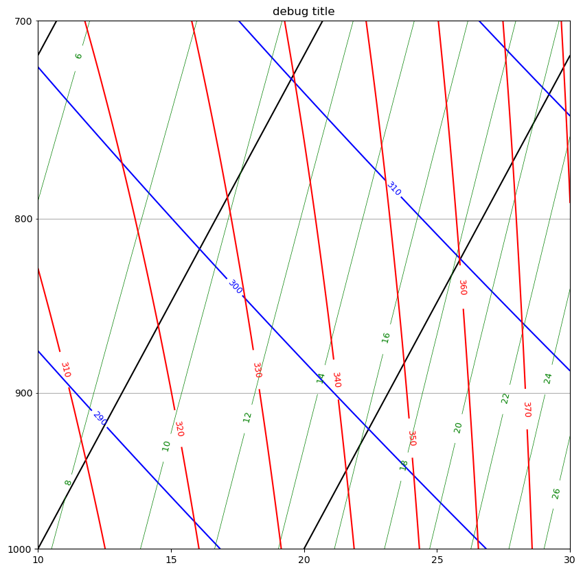

Tompkins practice questions – solution#
Buoyancy and stability#
Questions
i) (3pt) Our by-now familiar air parcel of moist (but non-cloudy) air has a temperature of 24.9 deg C. It is neutrally buoyant sitting in an environment that has a temperature of 25 deg C and a mixing ratio of 10 \(g kg^{-1}\). What is the mixing ratio in the air parcel?
#your code here
from a405.thermo.constants import constants as c
# c.delta = 0.608
rvenv = 1.e-2
Tenv = c.Tc + 25
Tparcel = c.Tc + 24.9
Tvenv = Tenv*(1. + c.delta*rvenv)
#Tvparcel = Tparcel*(1 + c.delta*rvparcel)
#want Tvparcel = Tvenv
rvparcel =(Tvenv/Tparcel - 1)/c.delta
print('rvparcel: {:5.3f} g/kg'.format(rvparcel*1.e3))
rvparcel: 10.555 g/kg
ii (2pt) the temperature of the air parcel is increased by 1 deg C, so that it is no longer neutrally buoyant. Assuming the resulting acceleration is maintained (i.e. constant) for 10 seconds, what is the final parcel velocity?
#your code here
Tparcelp1 = Tparcel + 1
Tvparcel = Tparcelp1*(1 + c.delta*rvparcel)
buoy = c.g0*(Tvparcel - Tvenv)/Tvenv
print('parcel vel at 10 seconds={:5.3f} m/s'.format(buoy*10))
parcel vel at 10 seconds=0.329 m/s
iii (2 pt) Dry air at 1000 hPa is measured to have a temperature of 27oC, while at 900 hPa the temperature is 22 deg C, is this layer of the atmosphere dry stable, neutral or unstable?
#your code here
temp1 = c.Tc + 27
press1 = 1.e3
p0 = 1.e3
theta1 = temp1*(p0/press1)**(c.Rd/c.cpd)
temp2 = c.Tc + 22
press2 = 9.e2
theta2 = temp2*(p0/press2)**(c.Rd/c.cpd)
print('theta1, theta2 stable',theta1,theta2)
theta1, theta2 stable 300.15 304.160334298486
Fog#
In this question, for simplicity, assume the definition of relative humidity defined in terms of mixing ratio: RH = \(r_v/r_{vsat}\)
i (2pt) The environmental air with temperature of 25.0 deg C and a mixing ratio of 10 \(g kg^{-1}\) is located near the surface at a pressure of 1000hPa. What is the relative humidity?
ii (1pt) The air starts to cool isobarically at night until eventually a fog forms. Assuming the pressure is 1000 hPa. What is the temperature at which the fogs occurs? (Use the tephigram to answer this, please mark the answer on the tephigram)
iii (2pt) Derive this same temperature by inverting Teton’s formula, showing your working. (Out of interest note how close the answer is to your tephigram result).
iv (1pt) What is the common name given to this temperature?
# your code here
from a405.skewT.fullskew import makeSkewWet, find_corners
import matplotlib.pyplot as plt
import numpy as np
from a405.thermo.thermlib import find_rsat, find_Td
Temp=25 + c.Tc
rv = 10.e-3 # kg/kg
press=1.e5
rsat = find_rsat(Temp,press)
print(f"relative humidity {rv/rsat=:.2f}")
Tdew = find_Td(rv,press)
print(f"dewpoint for {rv=:.3f} kg/kg is {Tdew - c.Tc:.1f} deg C")
fig, ax = plt.subplots(1, 1, figsize=(10, 10))
corners=[10,30]
ax, skew = makeSkewWet(ax,corners=corners)
xcorners=find_corners(corners,skew=skew)
ax.set(xlim=xcorners,ylim=[1000,700])
#invert Teton
c1 = 273.16
c2=32.19
press=1.e5
rsat=1.e-2
c3=np.log(press*rsat/380.)/17.5
Tdew = (c3*c2 - c1)/(c3 - 1)
print("dewpoint is: {:5.3f} deg C".format(Tdew - c.Tc))
relative humidity rv/rsat=0.49
dewpoint for rv=0.010 kg/kg is 13.9 deg C
dewpoint is: 14.113 deg C

Relative humidity#
In this question, for simplicity, assume the definition of relative humidity defined in terms of mixing ratio.
i (2pt) A parcel of air at time t=0 has a temperature T0 of 25 deg C and a relative humidity RH of 0.1. What is the mixing ratio \(r_{v0}\)?
ii (4pt) The parcel is cooled and moistened isobarically by the evaporation of precipitation to reach a final temperature of \(T_1\) and a final mixing ratio of \(r_{v1}\). Use a rootfinder to solve for \(T_1\) if the relative humidity is RH=0.6.
from a405.thermo.thermlib import find_rsat
from a405.thermo.constants import constants as c
press=1.e5 # Pa
temp_before = 25 + c.Tc
rs25 = find_rsat(temp_before,press)
RH = 0.1
rv = RH*rs25
print(f'mixing ratio rv = {rv*1.e3:5.2f} g/kg')
mixing ratio rv = 2.03 g/kg
ii) Now evaporate precipitation while keeping the enthalpy the same.
from scipy import optimize
enthalpy_before = c.cpd*temp_before + c.lv0*rv
print(f"{enthalpy_before=:.0f} J/kg")
#
# make the rootfinder target this enthalpy
# pass both the enthalpy target and RH=0.6
#
def zero_temp(Tevap, enthalpy_target,RH,press):
enthalpy = c.cpd*Tevap + c.lv0*RH*find_rsat(Tevap,press)
return enthalpy - enthalpy_target
def find_evaptemp(enthalpy_target,RH,press):
Tevap = optimize.brentq(zero_temp,200,300,args=(enthalpy_target,RH,press))
return Tevap - c.Tc
RH=0.6
press = 1.e5 #Pa
Tevap = find_evaptemp(enthalpy_before,RH,press)
print(f"evaporatively cooled temperature {Tevap=:.1f} deg C")
enthalpy_before=304938 J/kg
evaporatively cooled temperature Tevap=14.5 deg C
Two compartment mixing#
Consider two compartments, each with a volume of 1 \(m^3\), separated by a rigid, perfectly insulating membrane.
Initially \(T_A\) = 300 K and \(p_A\) = \(10^5\) Pa, and \(T_B\) = 100 K and \(p_B\) = \(10^3\) Pa. Suppose the membrane breaks. Find the final temperature and pressure in the 2 \(m^3\) compartment. Does the total entropy change? By how much?
from a405.thermo.thermlib import find_theta
import numpy as np
Ta=300 #K
pa=1.e5 #Pa
Tb =100 #K
pb =1.e3 #Pa
Rd = 287 #J/kg/K
cv = 717 #J/kg/K
cpd = 1004. #J/kg/K
dens_fun = lambda temp,press: press/(Rd*temp)
theta_fun = lambda temp, press: temp*(1.e5/press)**(Rd/cpd)
First find the total mass and energy before#
dens_a = dens_fun(Ta,pa)
dens_b = dens_fun(Tb,pb)
theta_a = find_theta(Ta,pa)
theta_b = find_theta(Ta,pb)
#
# total mass = sum of mass of two 1 m^3 compartments
#
Mtot = dens_a*1 + dens_b*1
Ua = dens_a*cv*Ta #internal energy in Joules
Ub = dens_b*cv*Tb
Utot = Ua + Ub
print(f'Ua: {Ua:8.3e} J, Ub: {Ub:8.3e} J, Utot: {Utot:8.3e} J')
Ua: 2.498e+05 J, Ub: 2.498e+03 J, Utot: 2.523e+05 J
Use the specific internal energy u = cv*T to find T after#
u_tot = Utot/Mtot #specific internal energy in J/kg
temp_after = u_tot/cv
print(f'temp_after: {temp_after:6.2f} K')
temp_after: 294.17 K
Use the equation of state to find pressure after#
dens_after = Mtot/2. #total volume is 2 m**3.
press_after = Rd*dens_after*temp_after
print(f'press_after: {press_after:6.3f} Pa, dens_after: {dens_after:6.3f} kg/m^3')
press_after: 50500.000 Pa, dens_after: 0.598 kg/m^3
get the change in entropy from cpd x log(theta)#
theta_after = find_theta(temp_after,press_after)
entropy_before= dens_a*cpd*np.log(theta_a) + dens_b*cpd*np.log(theta_b)
entropy_after = Mtot*cpd*np.log(theta_after)
print(f'after: {entropy_after:6.3f} J/kg/K, before: {entropy_before:6.3f} J/kg/K')
after: 7061.283 J/kg/K, before: 6896.614 J/kg/K
5. Taylor series#
Find the second order taylor series expansion for the following functions:
5.i (2pt) \((1 + \delta)^{-3}\)#
5.i answer#
\(\begin{aligned} & f(\delta)=(1+\delta)^{-3} \quad f(0)=1 \\ & f^{\prime}(\delta)=-3(1+\delta)^{-4} \quad f^{\prime}(0)=-3 \\ & f^{\prime \prime}(\delta)=12(1+\delta)^{-5} \quad f^{\prime \prime}(0)=12 \\ & f(\delta)=1-3 \delta+6 \delta^2 \end{aligned}\)
5.ii(2pt) \(\log(1 + \delta)\)#
5.ii answer#
\(\begin{aligned} & f(\delta)=\log (1+\delta) \quad f(0)=0 \\ & f^{\prime}(\delta)=\frac{1}{1+\delta} \quad f^{\prime}(0)=1 \\ & f^{\prime \prime}(\delta)=-1(1+\delta)^{-2} \quad f^{\prime \prime}(0)=-1 \\ & f(\delta)=0+\delta-\frac{\delta^2}{2} \end{aligned}\)